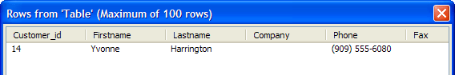
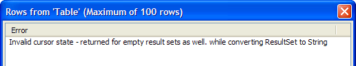

Deleting Records in a Back-end Database
To delete records into a back-end database, you use the SQL DELETE command. The general syntax of the DELETE command is:
|
DELETE FROM tablename WHERE Column_Expression = Value |
 Note : Before proceeding,
start Access, open Alphasports.mdb, copy the
customer table, and name the copy customer_copy.
Note : Before proceeding,
start Access, open Alphasports.mdb, copy the
customer table, and name the copy customer_copy.
Let us delete a record from the Customer_Copy table. First, we will query the table and prove that it contains a specific record. In the Interactive window create the variables we will need.
|
dim conn as SQL::Connection dim query_cmd as C dim delete_cmd as C |
Open the connection.
|
? conn.open("{A5API=Access,FileName='C:\Program Files\A5V8\MDBFiles\Alphasports.mdb',UserName='Admin'}") = .T. |
Find the records where the firstname field begins with "Y". This requires the use of a Portable SQL function named SubString(). First, we must enable Portable SQL by setting the conn.PortableSQLEnabled property to TRUE.
|
conn.PortableSQLEnabled = .t. query_cmd = "select * from customer_copy where substring(firstname,1,1) = 'Y'" |
Now, retrieve and preview the data.
|
? conn.execute(query_cmd) = .T. sql_resultset_preview(conn.ResultSet) |

Now delete the record.
|
delete_cmd = "DELETE FROM Customer WHERE substring(firstname,1,1) = 'Y'" ? conn.execute(delete_cmd) = .T. |
Now, look at the results.
|
conn.execute(query_cmd) SQL_ResultSet_Preview(conn.resultset) |
There are no records that match this filter.

|
conn.close() |
Limitations
Desktop applications only.
See Also
Working with SQL Databases, SQL::Connection::Execute()